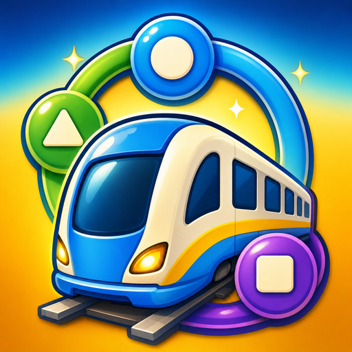
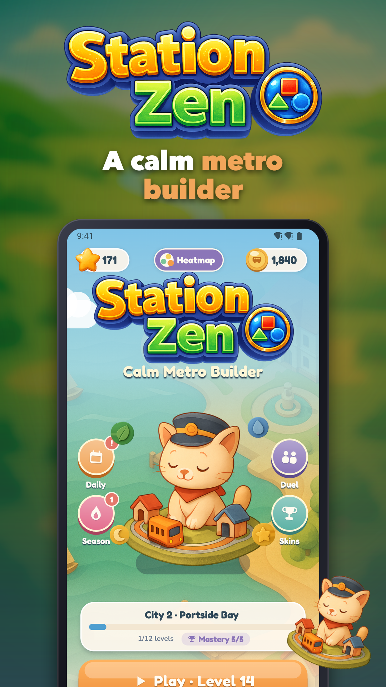
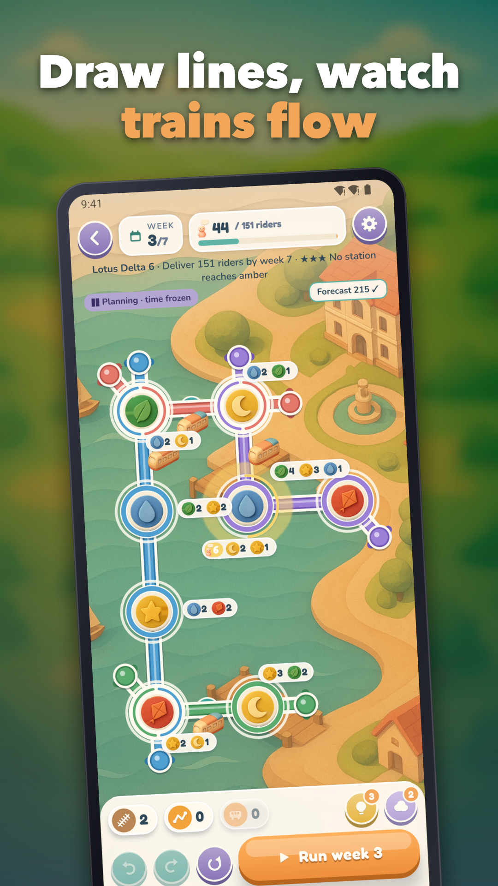
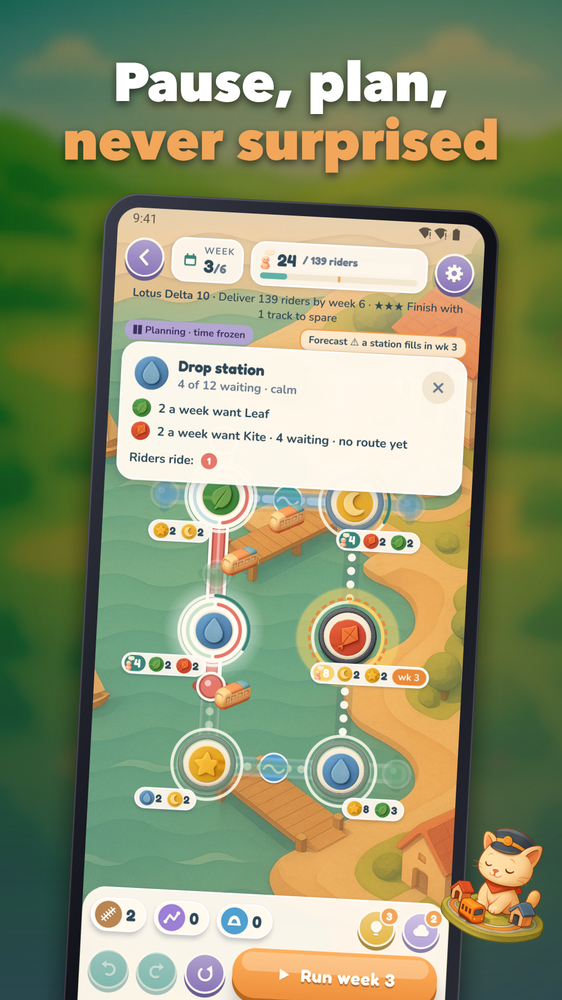
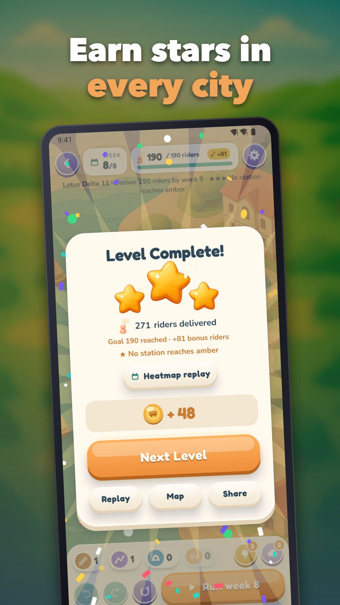
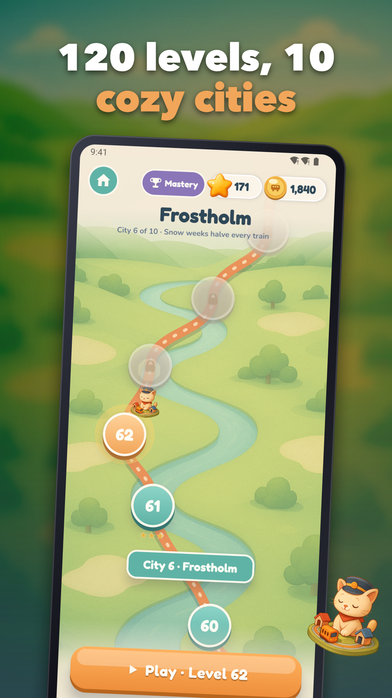
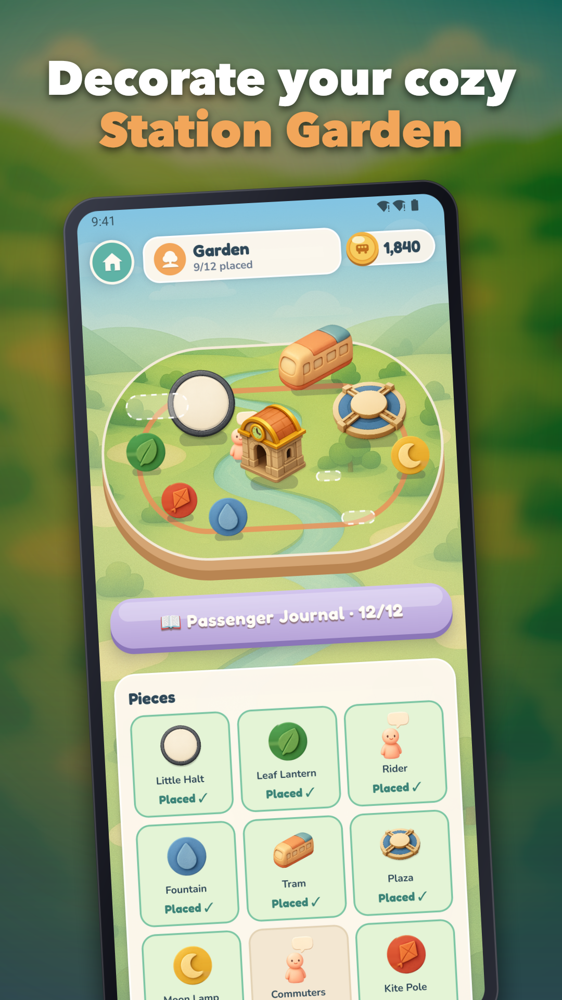

Station Zen: Metro Builder
A calm metro builder: plan each week paused, draw lines, watch riders flow.






Station Zen is a calm metro builder where you draw rail lines, plan at your own pace and watch passengers travel to the stop they want.
Every week starts paused. Take as long as you like to lay out your lines, change your mind, then press play and see how your network flows.
A GENTLE WAY TO PLAY
Looking for a relaxing puzzle game with real thinking behind it? Station Zen is built around soft pressure, not panic.
• Draw metro lines along rail corridors. Passengers ride to the station that shows the glyph they want, and change lines at shared stations.
• Undo your last 3 edits of the week if a plan doesn't work out.
• Crowding is never a surprise. Station rings turn yellow, then amber, then a "Last Call" warns you in good time. A run ends only if a station stays full for 2 weeks in a row.
• Restart a level or ask for a hint whenever you like.
120 HANDCRAFTED LEVELS IN 10 CITIES
Travel through ten paper-craft cities, from cosy Willowmere to Grand Meridian. Each level is a handcrafted puzzle with a star rating, and new ideas arrive step by step as the cities change. Power-ups such as freeze can help in a tight spot.
COLLECT AND DECORATE
• Station Garden: decorate a paper diorama island with 12 pieces, bought with Tokens and unlocked by the stars you earn.
• City Mastery skins to restyle your lines and trains.
• Passenger Journal to collect the little characters you meet.
• Cosmetic themes you can buy with in-game currency.
COME BACK EVERY DAY
• A Daily Puzzle with streaks to keep going.
• A Season Pass with a free track.
• Leaderboards to compare your best networks.
PLAY WITH FRIENDS
Challenge other players in live online Duels, or invite friends into a private room and compare networks in real time. If no opponent is found, an AI rival steps in. Single-player works offline, and there is no account or login: your progress is stored on your device.
Fans of thoughtful strategy games will find plenty to master, while newcomers can settle in gently. It is a metro game you can enjoy in short breaks or long evenings, with sound and haptics settings to suit you.
Ads are light, and you choose any rewarded video for a hint, revive or free coins. A Remove Ads purchase turns off interstitials and banners.
Open Station Zen, plan it slowly, and watch it flow.
Support: jeets98e@gmail.com